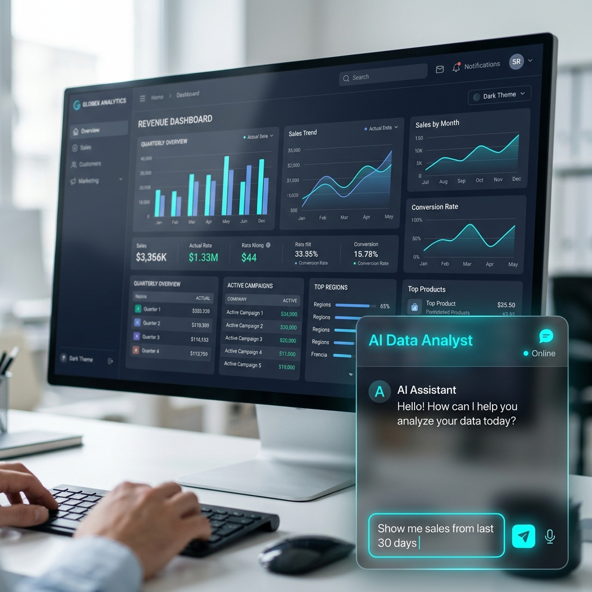
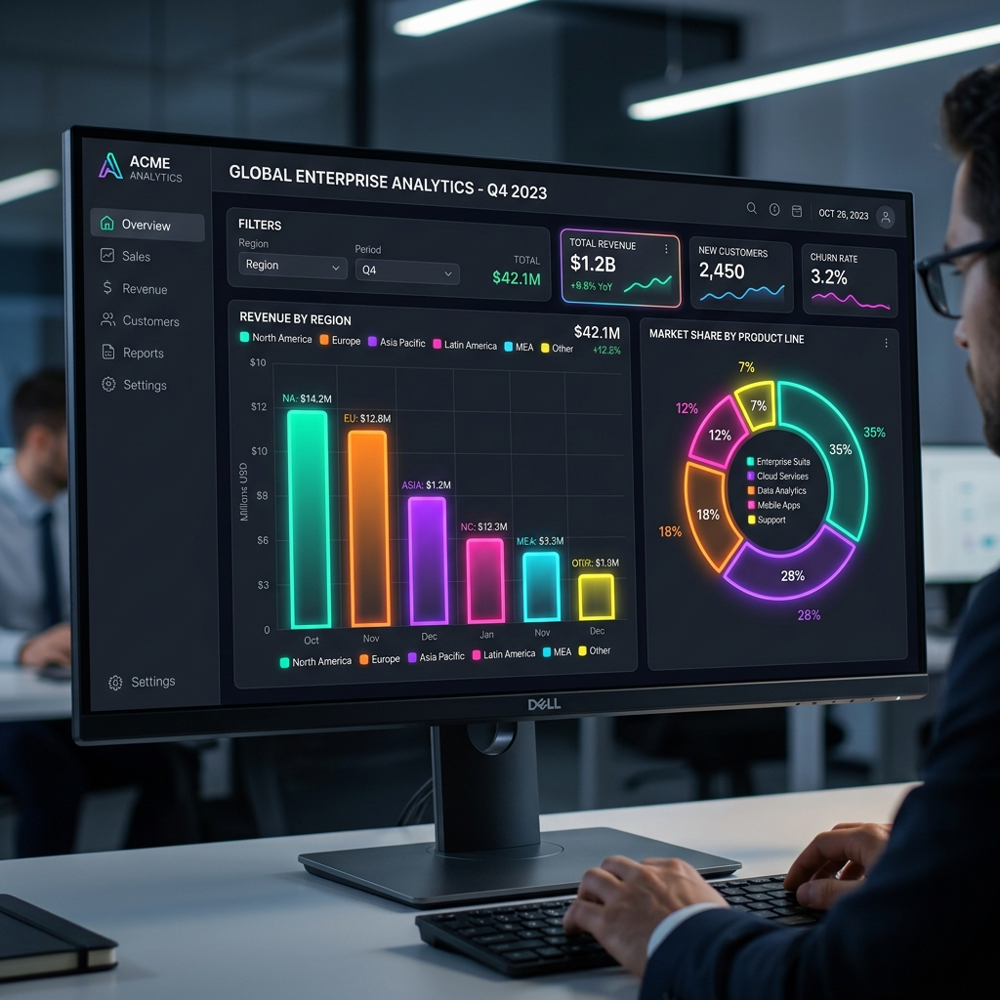

Dictate report requests using speech-to-text directly in the Odoo navbar.
Connect Gemini 2.0, GPT-4o, Claude 3.5, Groq, or 100% private local Ollama.
Generates actionable executive takeaways & business observations with every chart.
Iteratively tweak reports with follow-ups ("make it a line chart", "filter won").
Eliminate complex filters, search domains, and manual pivot configurations. Simply speak into your microphone or type what you need. The AI translates your prompt into precise Odoo ORM actions, automatically opening charts (Bar, Stacked Bar, Pie, Line) or native Pivot tables in under a second.

Sleek floating AI Analyst accessible from anywhere in Odoo with Voice Input and Suggestion Chips.
Competitor apps just dump numbers on a screen. Ridhira AI Analyst includes an Executive Intelligence Layer that analyzes the generated query and delivers high-level bulleted takeaways explaining trends, anomalies, and tactical next steps for managers.

Interactive charts, drill-downs, and instant dashboard pinning for executives.
Never get locked into a single AI provider or monthly subscription fee. Choose the best provider for your budget, speed, and privacy requirements:
| Capability | Ridhira AI Analyst WINNER | Typical Competitor Apps |
|---|---|---|
| Voice Speech-to-Text Input | ✓ Built-in (0 cost, Web Speech) | ✗ Typing only |
| Executive AI Insights & Advice | ✓ Automated Takeaways | ✗ Raw charts only |
| Conversational Refinement | ✓ Multi-turn follow-ups | ✗ Must restart query |
| Local Ollama / On-Premise LLM | ✓ 100% Private (No API cost) | ✗ Cloud API keys only |
| Groq Sub-Second Inference | ✓ Supported | ✗ Not supported |
| Odoo 20 Native OWL 3 | ✓ Fully compatible | ✗ Legacy widgets / v16-v17 |
| Query History & Favorite Star | ✓ Included with 1-click re-run | ✗ Missing or basic |
| Multi-Company Safeguards | ✓ Automatic Company Filtering | ✗ May leak cross-company data |
Your raw database records, customer names, financial figures, and private communications never leave your server. The AI only interprets the database schema (field descriptions and types) to construct standard Odoo ORM domains. Odoo's internal record rules and user permissions execute locally on your own database.